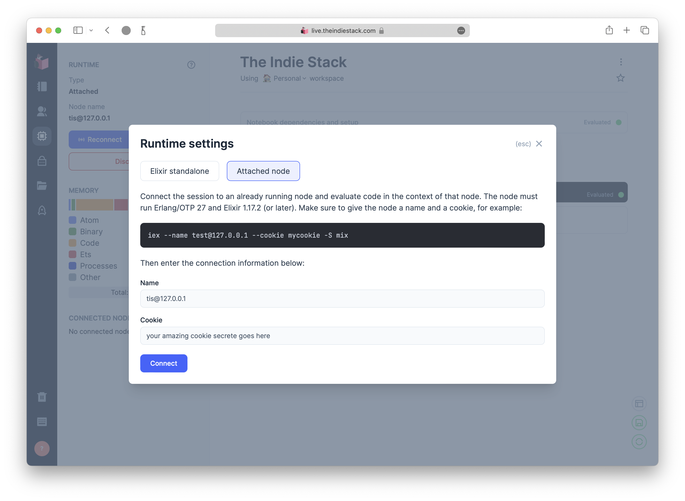
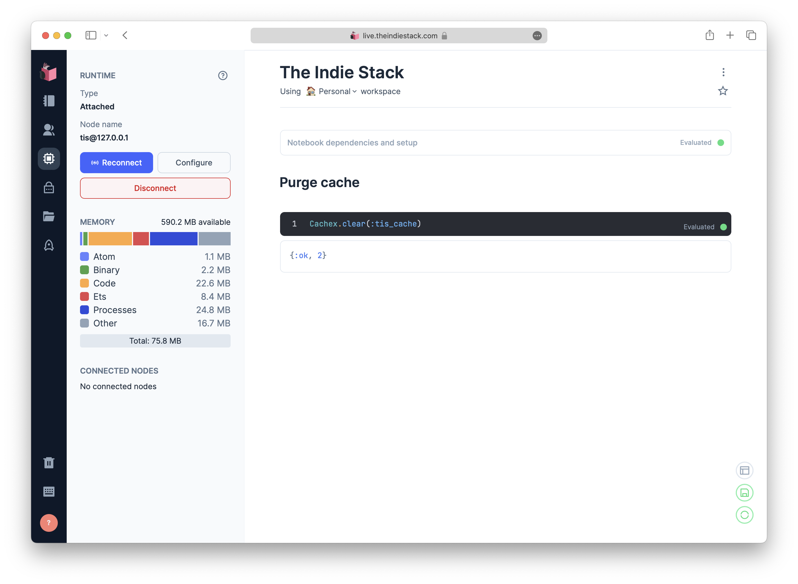

Connect Livebook to Phoenix on Vps

Livebook is very powerful application which can be used in many different ways with your Phoneix project. I have few apps running on my VPS and sometimes I would like to run some functions without creating interface for them from admin side, such as cache clean up. Perhaps run some analytical queries to the database and much more.
VPS Setup
Here is great article from Björn Brynjúlfur on how to deploy Phoenix app to VPS.
I just customised couple of things, since I’m using asdf.
When installing
erlangandelixirviaasdfdon’t forget about prerequisites. And do not forget to add. $HOME/.asdf/asdf.shto your rc file. I’m using zsh, in my case it’s.zshrc
I have two systemmd services, one for Phoenix app and one for Livebook.
Here is an examples:
# /lib/systemd/system/phoenix.service
[Unit]
Description=The Indie Stack - Phoenix App
After=network.target
[Service]
Type=simple
User=root
Restart=on-failure
EnvironmentFile=/var/www/TheIndieStack/.env
WorkingDirectory=/var/www/TheIndieStack/
ExecStart=/usr/bin/zsh -c 'elixir --name tis@127.0.0.1 --cookie supersecret -S mix phx.server'
Environment="PATH=/root/.asdf/bin:/root/.asdf/shims:/usr/local/bin:/usr/bin:/bin"
[Install]
WantedBy=multi-user.target
Instead of running your Phoneix application with mix phx.server you need to run it like so: elixir --name tis@127.0.0.1 --cookie supersecret -S mix phx.server. In order to give node name and set cookie, so that in the future we will be able to connect to that from Livebook.
Here is simplest way to install Livebook using elixir:
mix do local.rebar --force, local.hex --force
mix escript.install hex livebook
# Start the Livebook server
livebook server
# See all the configuration options
livebook server --help
And since I’m using .asdf, here is example of my livebook.service:
# /lib/systemd/system/livebook.service
[Unit]
Description=The Indie Stack - Livebook
After=network.target
[Service]
Type=simple
User=root
Restart=on-failure
EnvironmentFile=/var/www/Livebooks/.env
WorkingDirectory=/var/www/Livebooks/
ExecStart=/usr/bin/zsh -c '/root/.asdf/installs/elixir/1.17.2-otp-27/.mix/escripts/livebook server'
Environment="PATH=/root/.asdf/bin:/root/.asdf/shims:/usr/local/bin:/usr/bin:/bin"
[Install]
WantedBy=multi-user.target
# EnvironmentFile=/var/www/Livebooks/.env from example above
LIVEBOOK_PASSWORD=VerySecretPassword
LIVEBOOK_PORT=9090
- Each time when you add or modify service files you must run:
systemctl daemon-reload - When you would like to start service:
systemctl start livebook.service - When you would like to restart service:
systemctl restart livebook.service - When you would like to stop service:
systemctl stop livebook.service
The last thing you need to do to add nginx config for you Livebook. Here is my example:
server {
listen 80;
server_name live.example.com;
location / {
proxy_set_header X-Real-IP $remote_addr;
proxy_set_header X-Forwarded-For $proxy_add_x_forwarded_for;
proxy_set_header Host $http_host;
proxy_redirect off;
proxy_pass http://localhost:9090;
proxy_http_version 1.1;
proxy_set_header Upgrade $http_upgrade;
proxy_set_header Connection "upgrade";
}
}
Connecting
Once livebook.service and phoenix.service are running, you can connect to your phoenix app from Livebook.
 